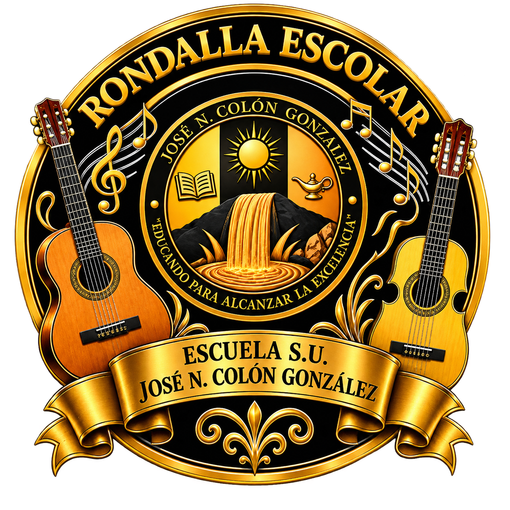

Rondalla Escolar
José N. Colón González
Nuestra música, nuestras raíces, nuestro futuro.
En cada cuerda y cada ritmo compartimos el amor por nuestra cultura. Conoce a la Rondalla Escolar José N. Colón González y acompáñanos a cultivar talento, disciplina y comunidad a través de la música.
Pasa el cursor o desliza el dedo sobre las cuerdas.
Escúchanos
Una interpretación destacada
Próxima presentación
Nuestra esencia
Aprender música es aprender a escucharnos
La rondalla es un espacio donde los estudiantes descubren las tradiciones musicales de Puerto Rico tocando juntos. Cada ensayo cultiva disciplina, colaboración y orgullo por lo nuestro.
Conoce nuestra rondalla«Fomentar el desarrollo musical, cultural y humano de nuestros estudiantes mediante la interpretación colectiva.»
Nuestros instrumentos
Las voces de la rondalla
Momentos recientes
Lo que hemos vivido
Círculo de Amigos de la Rondalla
Gracias a nuestros auspiciadores
¿Quieres que la rondalla toque en tu actividad?
Recibimos invitaciones, propuestas de colaboración y consultas de la comunidad.
Invítanos